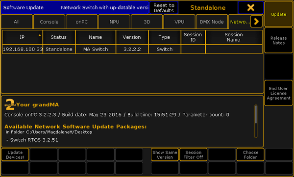

You can update the firmware of the MA Network Switch by using a grandMA2 console or grandMA2 onPC.
The current firmware is displayed at the bottom right corner at the front end display of the MA Network Switch, in the MA Network Configuration window, and in the web interface.
grandMA2 console and MA Network Switch needs the same subnet
Inserted USB stick with the new software version in the root directory
Important:
It is necessary that only one update files for the MA Network Switch is on the USB stick. If two or more update files are on the USB stick the update files has to be in separate folders.
Open the Software Update window.
- Press Setup, and tap under console Software Update.
The Software Update window opens.
Tap at Network Switch.

Software Update - MA Network Switch
Tap Choose Folder. The file browser opens. Select the folder in which the update file is.
Tap in the table at the MA Network Switch you want to update and tap Update Devices!.
The Enter MA Network Switch password pop-up opens.
Enter MA Network Switch password
Enter the password of the MA Network Switch and tap Please or press Please. If no password is set enter the default password admin.
The switch is updating and reboots. This can take up to 5 minutes.